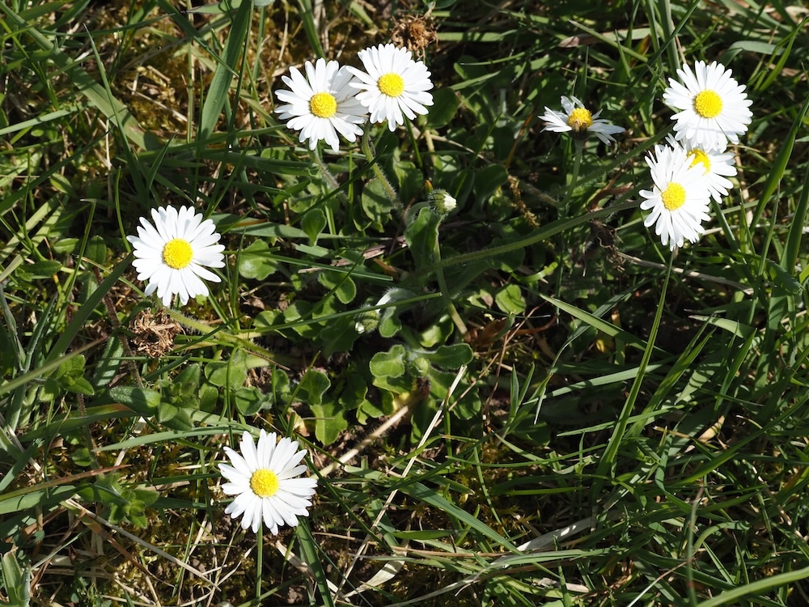

Die bekannteste Blume der Welt – und ein Überlebenskünstler unter dem Rasenmäher.


Meister der Mahd
Das Gänseblümchen ist ein Genie der Anpassung: Je öfter ein Rasen gemäht wird, desto flacher werden die Blätterrosetten – die Pflanze ‚lernt' durch Evolution, unter der Messerklinge zu bleiben. An ungepflegten Wiesen wächst es aufrecht, auf Sportplätzen flach und kompakt. Ein lebendiges Experiment der Selektion, das man auf jedem Schulhof beobachten kann. "Er liebt mich, er liebt mich nicht" – eine Kulturgeschichte Das Orakelspiel mit Gänseblümchen ist in ganz Europa bekannt und reicht bis ins Mittelalter zurück. Im englischen Sprachraum heisst es ‚Daisy' – nach ‚Day's Eye', weil es sich nachts und bei Regen schliesst und morgens mit der Sonne öffnet. Kaum eine Pflanze ist so tief in der menschlichen Kulturgeschichte verankert.
Wissenswertes & Merksätze
Schliessen bei Regen
Das Gänseblümchen schliesst seine Blüten nachts und bei schlechtem Wetter – ein eingebauter Schutzmechanismus für Pollen und Nektar.
Bellis = hübsch (Latein)
Der Gattungsname beschreibt schlicht, was alle sehen – eine der hübschesten und volkstümlichsten Blumen Europas.
Indikator für Bodenqualität
Massenbestände zeigen nährstoffarme, extensiv genutzte Wiesen an – ein Zeichen für ökologisch wertvolles Grünland.